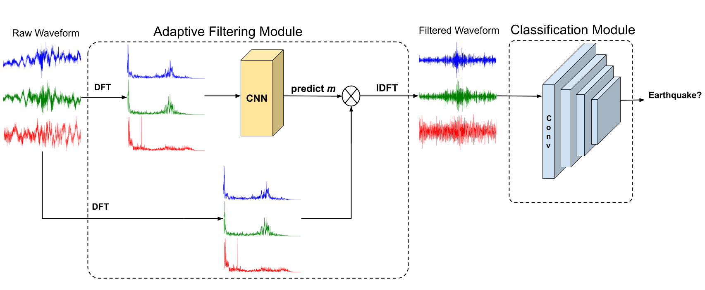
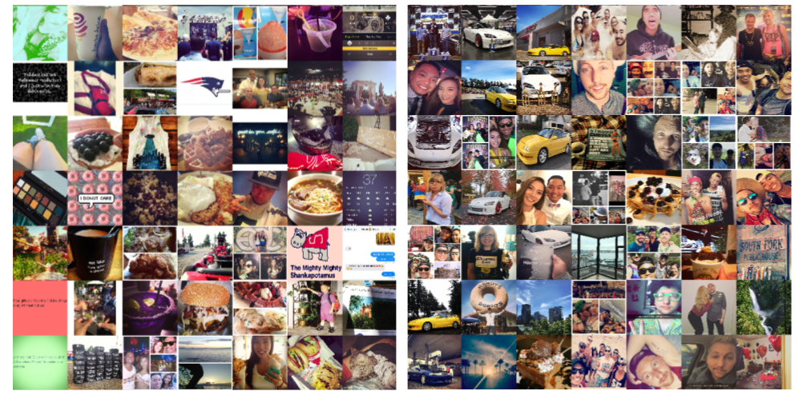
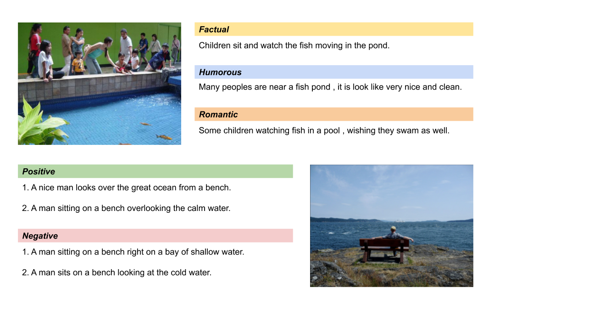
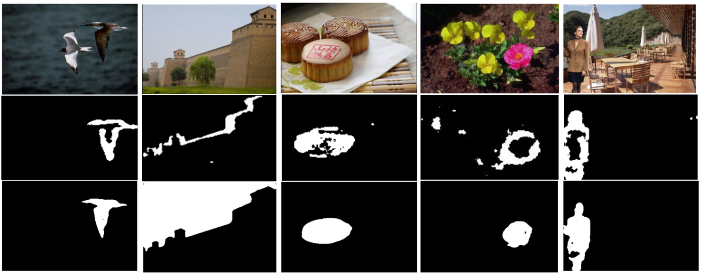
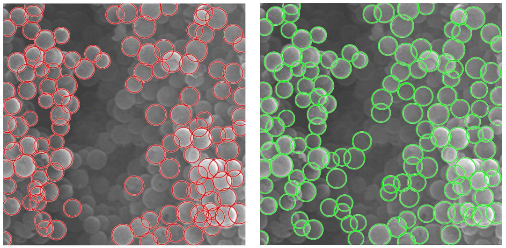

Data-Driven Seismic Waveform Inversion: A Study on the Robustness and Generalization Zhongping Zhang, Youzuo Lin IEEE Transactions on Geoscience and Remote Sensing (TGRS), 2019.
[paper]
2019

Adaptive Filtering for Event Recognition from Noisy Signal: An Application to Earthquake Detection Zhongping Zhang, Youzuo Lin, Zheng Zhou, and Tianlang Chen IEEE International Conference on Acoustics, Speech and Signal Processing (ICASSP), 2019.
[paper]
2018

How to Become Instagram Famous: Post Popularity Prediction with Dual-Attention Zhongping Zhang, Tianlang Chen, Zheng Zhou, Jiaxin Li, and Jiebo Luo IEEE International Conference on Big Data (Big Data), 2018.
[paper]

"Factual" or "Emotional": Stylized Image Captioning with Adaptive Learning and Attention
Tianlang Chen, Zhongping Zhang, Quanzeng You, Chen Fang, Zhaowen Wang, Hailin Jin, and Jiebo Luo European Conference on Computer Vision (ECCV), 2018.
[paper]

Boundary-based Image Forgery Detection by Fast Shallow CNN Zhongping Zhang, Yixuan Zhang, Zheng Zhou, Jiebo Luo International Conference on Pattern Recognition (ICPR), 2018.
[paper]

Automatic Detection of Particle Size Distribution by Image Analysis Based on Local Adaptive Canny Edge Detection and Modified Circular Hough Transform
Yingchao Meng,* Zhongping Zhang*, Huaqiang Yin, and Tao Ma (* Equal contribution) Micron, 2018.
[paper]